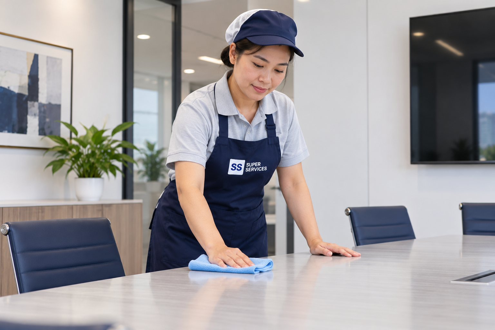
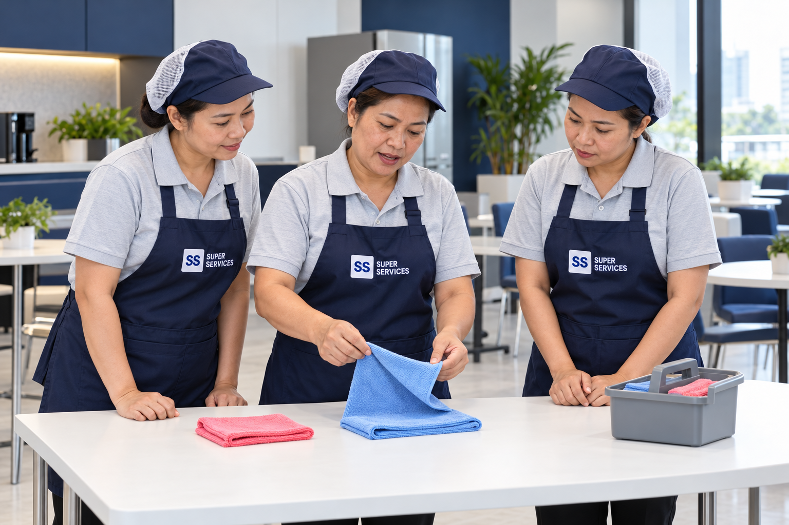
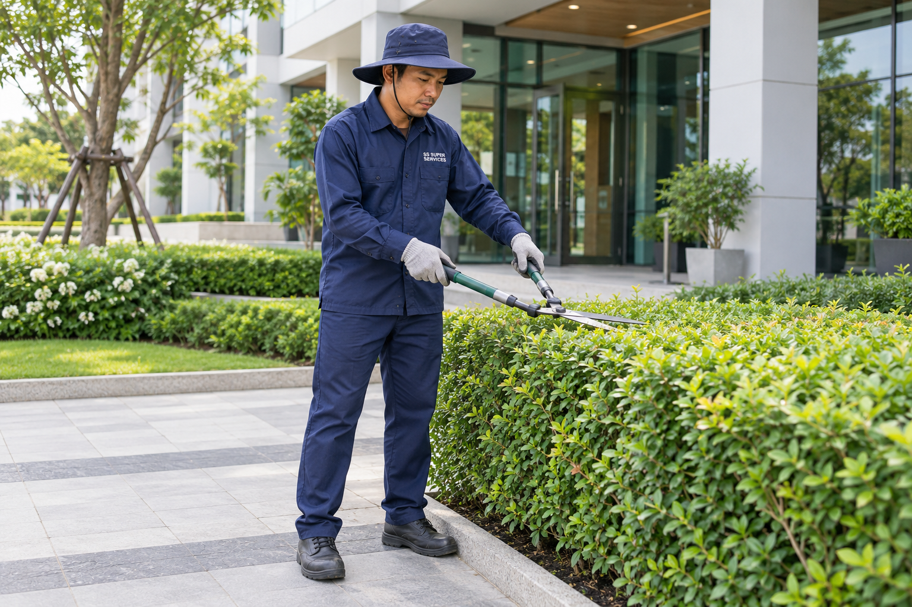

We put customer satisfaction first.
เรายึดหลักความพึงพอใจของลูกค้าเป็นสำคัญ
บริษัท เอส เอส ซุปเปอร์ เซอร์วิส จำกัด
ผู้ให้บริการด้านการทำความสะอาดอย่างครบวงจร สำหรับหมู่บ้านจัดสรร อาคารชุด อาคารสำนักงาน โรงงาน โกดัง และโรงแรม รวมถึงบริการดูแลสวน ตลอดจนจำหน่ายผลิตภัณฑ์และอุปกรณ์ทำความสะอาด โดยให้ความสำคัญกับความต้องการของลูกค้าและการพัฒนางานบริการอย่างต่อเนื่อง
จุดเริ่มต้นของงานบริการย้อนกลับไปในปี พ.ศ. 2535 จากการดูแลสวนและจัดสวนบริเวณภายในและภายนอกอาคารในจังหวัดปทุมธานีและพื้นที่ใกล้เคียง ก่อนขยายสู่งานรับเหมาทำความสะอาด และพัฒนาต่อมาเป็น บริษัท เอส เอส ซุปเปอร์ เซอร์วิส จำกัด ในปี พ.ศ. 2565
งานบริการที่เติบโตไปพร้อมความต้องการของลูกค้า
จากการดูแลพื้นที่สีเขียว สู่การรับเหมาทำความสะอาดและงาน Big Cleaning ทั้งงานขัดพื้น ลงแว็กซ์ และงานทำความสะอาดอาคาร การขยายงานครอบคลุมถึงงานทำความสะอาดที่สูง เช็ดกระจก และโรยตัว พร้อมผลิตภัณฑ์และอุปกรณ์สำหรับงานทำความสะอาด เพื่อรองรับลักษณะพื้นที่และรูปแบบงานที่แตกต่างกัน
ใส่ใจคุณภาพ พัฒนาทีมงานอย่างต่อเนื่อง
เราให้ความสำคัญกับการฝึกอบรมและพัฒนาพนักงาน เพื่อให้ทีมงานได้เรียนรู้วิธีการทำความสะอาดด้วยเทคนิคต่าง ๆ ลดข้อผิดพลาด และสร้างมาตรฐานการปฏิบัติงาน รวมถึงการเลือกใช้ผลิตภัณฑ์และอุปกรณ์ทำความสะอาดที่เหมาะสมกับงาน



การดูแลคุณภาพเริ่มจากคนทำงาน เราจึงมุ่งพัฒนาความรู้และทักษะของทีมงาน ควบคู่กับการตรวจสอบการปฏิบัติงานอย่างสม่ำเสมอ เพื่อให้การบริการสอดคล้องกับขอบเขตงานและความต้องการของแต่ละสถานที่
ความพึงพอใจของลูกค้าเป็นแนวทางสำคัญในการพัฒนาบริการ ทั้งด้านการทำความสะอาด การดูแลสวน และการให้คำแนะนำเรื่องผลิตภัณฑ์และอุปกรณ์ เพื่อดูแลพื้นที่ของลูกค้าและยกระดับงานบริการอย่างต่อเนื่อง
เส้นทางของเรา
OUR JOURNEY
พ.ศ. 2535
จุดเริ่มต้นของงานบริการ
เริ่มให้บริการดูแลสวนและจัดสวน บริเวณภายในและภายนอกอาคาร ในจังหวัดปทุมธานีและพื้นที่ใกล้เคียง ในนามห้างหุ้นส่วนจำกัด กรีนเมเนีย 1992
พ.ศ. 2537
ขยายสู่งานทำความสะอาด
ขยายธุรกิจงานบริการรับเหมาทำความสะอาดแบบสัญญารายปี งาน Big Cleaning ขัดพื้น และลงแว็กซ์ พร้อมขยายงานสู่ภาคราชการในเขตจังหวัดปทุมธานี
พ.ศ. 2542
ขยายงานสู่พระนครศรีอยุธยา
ขยายกิจการครอบคลุมพื้นที่จังหวัดพระนครศรีอยุธยา เพื่อเพิ่มความสะดวกในการบริหารงาน และดูแลลูกค้าได้อย่างทั่วถึง
พ.ศ. 2565
จัดตั้ง S S Super Services
จัดตั้ง บริษัท เอส เอส ซุปเปอร์ เซอร์วิส จำกัด ขยายการดูแลลูกค้าในพระนครศรีอยุธยา ปทุมธานี สระบุรี และสิงห์บุรี รวมถึงงานทำความสะอาดที่สูง เช็ดกระจก โรยตัว และจำหน่ายผลิตภัณฑ์กับอุปกรณ์ทำความสะอาด
GET IN TOUCH
นัดประเมินพื้นที่หน้างาน
แจ้งข้อมูลพื้นที่และบริการที่สนใจ ทีมงานจะใช้รายละเอียดนี้เพื่อพูดคุยขอบเขตงาน